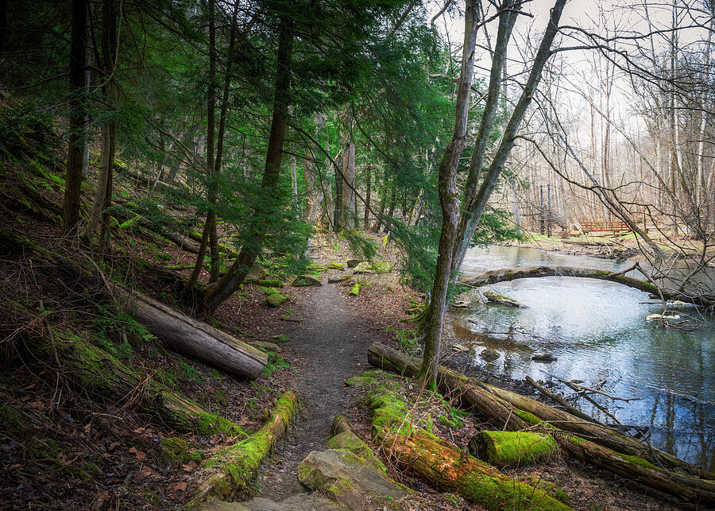

Lima, Grand Rapids & Celina
Local parks, lake sunrises, bridges, river reflections, rural landscapes, and familiar Northwest Ohio atmosphere.
Ohio Fine Art Photography
Based in Lima, Ohio, Dan Sproul creates atmospheric Ohio nature photography featuring Hocking Hills, Mohican State Park, Clifton Gorge, Lake Erie, Celina, local Northwest Ohio landscapes, waterfalls, forests, rivers, bridges, and seasonal Midwest scenery.
Ohio Landscape & Nature Photography
This page brings together Ohio nature photography prints, Ohio landscape wall art, Lima Ohio photography, and Northwest Ohio artwork from across the state. The emphasis is on place: quiet lakes, waterfalls, forests, river scenes, bridges, parks, lighthouse views, and seasonal Midwest atmosphere.
Ohio artwork can still work beautifully in healthcare, hospitality, office, senior living, and residential interiors, but this page is primarily organized for people searching by Ohio location, Ohio subject matter, and familiar regional landscapes.
Featured Ohio Photography
A curated group of Ohio photographs for collectors, homeowners, lake houses, offices, regional interiors, and anyone looking for Ohio landscape wall art.
Many of these photographs were created throughout Ohio over multiple seasons, with an emphasis on locations that Ohio residents recognize and return to year after year. From Lima and Northwest Ohio to Hocking Hills, Mohican, Clifton Gorge, and Lake Erie, the collection focuses on atmosphere, place, and regional connection.

Warm local sunrise atmosphere and quiet water for Northwest Ohio collectors.

Vertical lake and lighthouse artwork for entryways, lake homes, and Ohio collectors.

Ohio lighthouse mixed media artwork for Lake Erie collectors, lake homes, and coastal-inspired interiors.

Rustic rural Ohio artwork with farmhouse character, winter texture, and regional nostalgia.

Bright green Ohio waterfall photography for residential interiors, wellness rooms, and nature collectors.

Vertical Ohio waterfall artwork for entryways, stair landings, foyers, and narrow feature walls.

Refined Ohio waterfall photography for offices, professional interiors, and Hocking Hills collectors.

Bright local Ohio spring imagery with regional familiarity and soft color.

Classic Ohio waterfall imagery with movement, rock, and forest atmosphere.

Quiet water movement and soft Ohio morning light.

Warm seasonal Ohio park atmosphere for homes and collectors.

Refined black-and-white Ohio landscape photography for collectors and offices.
Explore Ohio Photography By Region
Browse Ohio artwork by the places and visual themes people actually search for: Lima and Northwest Ohio, Hocking Hills, Mohican, Lake Erie and lighthouses, rivers, waterfalls, forests, and seasonal Midwest landscapes.
Local parks, lake sunrises, bridges, river reflections, rural landscapes, and familiar Northwest Ohio atmosphere.
Waterfalls, cliffs, caves, forest trails, long exposures, and some of Ohio’s most recognizable nature scenery.
Woodland paths, suspension bridges, forest trails, river scenes, and natural textures for Ohio nature collectors.
Lakefront scenes, lighthouse reflections, sunrise water views, and coastal Ohio imagery for lake houses and collectors.
Little Miami River, Grand Rapids reflections, bridges, flowing water, and quiet riverbank landscapes.
Spring blossoms, summer greens, autumn color, winter stillness, fog, snow, and warm evening light.
Ohio Through the Seasons
Ohio landscape photography has strong seasonal variety, from spring blossoms and summer waterfalls to autumn parks and quiet winter scenes.
Lima spring trees, early forest color, waterfalls, wet trails, and soft new growth.
Lake reflections, lighthouse scenes, river movement, green forests, and waterfall photography.
Warm parks, gold leaves, wooded trails, foggy mornings, and Midwest autumn atmosphere.
Snow-covered trees, quiet bridges, monochrome landscapes, frozen water, and soft winter light.
Featured Interior Mockups
Click any mockup to enlarge the image, review application notes, and purchase the corresponding print.
Senior Living Lounge
Warm Ohio lake atmosphere for senior living gathering rooms, healthcare lounges, and regional residential interiors.
Lake House Entryway
Vertical Ohio lake artwork for entryways, lake homes, hospitality reception spaces, and regional interiors.
Lake Erie Living Room
Ohio lighthouse artwork with Lake Erie character for lake homes, living rooms, cottages, and regional collectors.
Ohio Country Home
Rustic Ohio barn artwork for farmhouse interiors, country homes, cabins, and collectors drawn to rural Midwest scenery.
Modern Residential
Fresh Ohio waterfall imagery for living rooms, wellness spaces, bedrooms, and calming residential interiors.
Modern Entryway
Vertical Ohio waterfall artwork for entry halls, stair landings, foyers, and collectors connected to Clifton Gorge and Yellow Springs.
Executive Office
Vertical Ohio waterfall artwork for offices, reception areas, consultation rooms, and professional interiors.
Healthcare Waiting Room
Regional Ohio calm for patient-facing spaces, clinics, and restorative waiting rooms.
Hospitality Lobby
Large-format Ohio nature artwork for hotel lobbies, lounges, and regional hospitality interiors.
Wellness / Spa
Soft water movement for wellness rooms, restorative spaces, and calming interior environments.
Quiet Luxury Residential
Warm Ohio seasonal atmosphere for residential, boutique hospitality, and wellness interiors.
Executive Office
Refined Ohio black-and-white artwork for offices, consultation rooms, and professional interiors.
Why Ohio Landscapes Work
Ohio nature photography can feel personal because it reflects places people recognize: local lakes, familiar parks, wooded trails, rivers, bridges, waterfalls, and seasonal Midwest light.
For collectors and homeowners, these prints can connect a room to home, travel memories, family roots, lake weekends, or favorite Ohio places. For interiors, Ohio artwork can add local identity without feeling overly literal or tourist-focused.
Ohio Waterfalls & Forest Landscapes
Ohio has a strong visual language beyond skylines and city views. Waterfalls, gorge trails, wooded bridges, lake reflections, and river scenes create artwork that feels regional, natural, and timeless.
Ohio waterfall photography works well as statement artwork because it combines motion, stone, forest, and atmosphere.
Forest paths, shaded trails, bridges, and woodland texture create calmer Ohio nature imagery for homes and interiors.
Rivers and bridge reflections add structure and quiet movement to Ohio landscape wall art.
Featured Ohio Locations
These location groups help visitors find artwork connected to familiar Ohio places while giving search engines clearer Ohio topic depth.

Waterfalls, cliffs, caves, forest trails, and iconic Ohio scenery.

Woodland trails, bridges, forest paths, and river scenes.

Stone, trails, water, and shaded woodland texture.
Local seasonal landscapes, parks, lake scenes, and Midwest atmosphere.
Lake reflections, lighthouse imagery, and regional water scenes.
Flowing water, soft morning light, and quiet Ohio river scenery.

Bridge reflections, river scenery, and Northwest Ohio landmarks.
Ohio lighthouse artwork, Lake Erie character, and coastal landmark imagery for collectors.
Farm fields, barns, winter texture, rural roads, and Midwest countryside atmosphere.

Northeast Ohio waterfall and gorge imagery with natural texture.
Browse the larger Ohio nature and landscape print collection.
Ohio Artwork for Collectors
Ohio nature photography works for people who want artwork connected to where they live, where they grew up, where they travel, or where they have family roots.
Landscape prints for living rooms, bedrooms, entryways, offices, and warm residential interiors.
Lake scenes, lighthouse reflections, and water imagery for lake homes and coastal-inspired Ohio interiors.
Regional artwork for retirement gifts, housewarming gifts, Ohio natives, alumni, and corporate gifts.
Artwork connected to familiar local places and seasonal Midwest atmosphere.
Oversized Ohio prints for feature walls, offices, gathering rooms, and lake house entryways.
Ohio artwork is available in multiple formats and sizes through the print catalog.
Ohio Artwork FAQ
The Ohio artwork includes Lima and Northwest Ohio, Hocking Hills, Mohican State Park, Clifton Gorge, Ohio lake scenes, waterfalls, forests, parks, bridges, and seasonal Midwest landscapes.
Yes. The collection includes Ohio lake scenes, lighthouse imagery, water reflections, and regional lakefront artwork including Celina and other Ohio water-inspired subjects.
Yes. Many Ohio images are available as framed prints, canvas, acrylic, metal, and fine art paper in multiple sizes through the print catalog.
Popular subjects include Hocking Hills waterfalls, Mohican forests, Clifton Gorge trails, Lima landscapes, Marblehead Lighthouse, Lake Erie scenes, Ohio barns, bridges, rivers, autumn color, and winter stillness.
No. The page is useful for collectors, homeowners, Ohio natives, lake house owners, offices, and anyone looking for Ohio nature photography prints.
Yes. Ohio waterfall imagery includes Hocking Hills, Tinkers Creek, and other waterfall and forest scenes available as wall art.